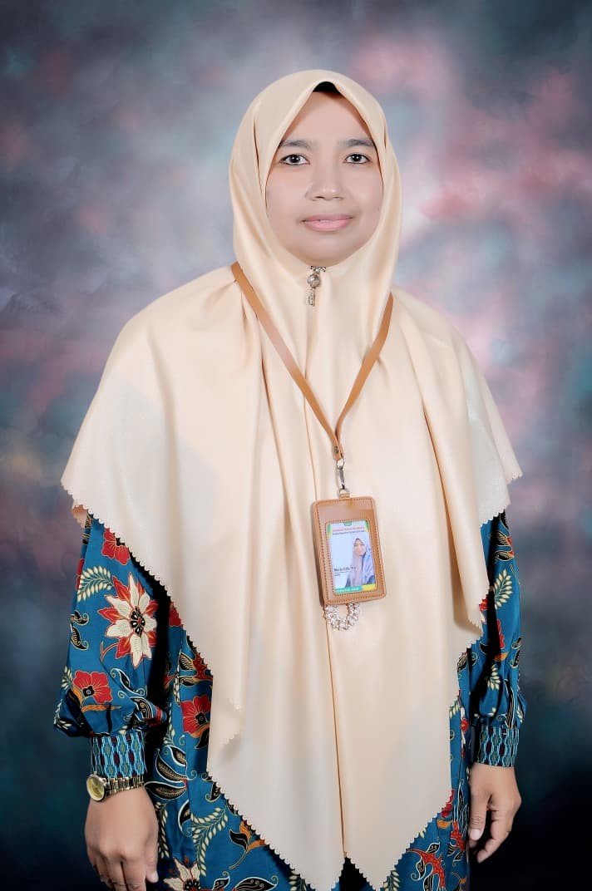

Panduan komprehensif, moderat, dan mendalam tentang Fikih Muamalah dan Ibadah untuk siswa MTs. Mengintegrasikan dalil naqli, analisis kasus kontemporer, dan nilai-nilai akhlakul karimah.
Materi disusun secara sistematis dengan pendekatan analitis, dilengkapi studi kasus, tabel perbandingan, dan tautan video pembelajaran interaktif.
Pertemuan 1
Penyembelihan
Membahas definisi, dasar hukum (QS. Al-Maidah: 3), rukun, dan syarat penyembelihan. Dilengkapi analisis maqdur alaih vs ghairu maqdur alaih serta etika penyembelihan mekanik modern yang tetap memenuhi syariat.
Studi Kasus
Hukum menyembelih hewan yang sakit parah (sekarat) dan penggunaan alat tajam non-logam dalam kondisi darurat.
Pertemuan 2
Kurban
Eksplorasi hukum (Sunnah Mu'akkad vs Wajib Nazar), syarat hewan (usia dan bebas cacat), serta waktu penyembelihan (10-13 Zulhijjah).
Tabel Analisis
Perbandingan mendetail: Kurban vs Akikah (Waktu, Jumlah Hewan, Kondisi Daging, dan Tujuan Syar'i).
Pertemuan 3
Akikah
Makna syukur atas kelahiran, hukum (Sunnah Mu'akkad), ketentuan 2 kambing untuk laki-laki dan 1 untuk perempuan, serta sunnah mencukur rambut dan bersedekah seberat timbangan rambut.
Studi Kasus
Bolehkah orang dewasa mengakikahi dirinya sendiri jika orang tua tidak mampu saat ia bayi? (Analisis pendapat Imam Ahmad dan Syafi'i).
Pertemuan 4
Jual Beli
Rukun dan syarat akad, objek jual beli, serta larangan jual beli yang mengandung gharar (ketidakjelasan), seperti jual beli sistem ijon atau barang yang belum dimiliki.
Studi Kasus
Analisis hukum Cash on Delivery (COD) dan Dropshipping dalam perspektif Fikih Muamalah kontemporer.
Pertemuan 5
Khiyar
Hak memilih untuk melanjutkan atau membatalkan akad. Membahas Khiyar Majelis, Khiyar Syarat, Khiyar Aibi (cacat), dan Khiyar Ru'yah (belum melihat barang).
Tabel Analisis
Matriks perbandingan 4 jenis Khiyar: Definisi, Waktu Berlaku, dan Contoh Penerapan di E-Commerce.
Pertemuan 6
Qirad (Mudharabah)
Akad kerjasama usaha antara pemilik modal (sahibul mal) dan pengelola (mudharib). Membahas pembagian keuntungan, risiko kerugian, dan larangan penggunaan modal.
Studi Kasus
Penerapan Qirad pada Bank Syariah dan koperasi simpan pinjam: Analisis skema bagi hasil vs bunga tetap.
Pertemuan 7
Riba
Definisi, dalil pengharaman (QS. Al-Baqarah: 275), dan 4 jenis riba: Riba Fadli, Qardhi, Yad, dan Nasi'ah. Dilengkapi cara menghindari praktik riba di era modern.
Tabel Analisis
Perbedaan mendasar Riba Fadli (tukar menukar barang ribawi) dan Riba Qardhi (pinjaman dengan syarat tambah).
Pertemuan 8
Ujian Tengah Semester & Ariyah
Evaluasi komprehensif materi Bab 1-7, dilanjutkan dengan pengantar Ariyah (Pinjam Meminjam). Membahas hukum mubah, sunnah, wajib, hingga haram, serta kewajiban mu'ir dan musta'ir.
Fokus UTS
Tanggung jawab peminjam atas kerusakan barang (misal: bensin motor pinjaman habis) dan batas pemanfaatan.
Pertemuan 9
Wadi'ah (Titipan)
Konsep penitipan harta. Analisis mendalam perbedaan Wadi'ah Yad al-Amanah (titipan murni, tidak boleh dipakai) dan Yad ad-Dhamanah (titipan yang boleh dikelola, seperti di Bank Syariah).
Studi Kasus
Hukum menggunakan barang titipan (sepatu/motor) tanpa izin pemilik dan konsekuensi ganti rugi jika rusak.
Pertemuan 10
Hutang Piutang (Al-Qard)
Akad tolong menolong (ta'awun). Hukum asal mubah, adab berhutang, larangan mengambil manfaat dari hutang (riba terselubung), dan keutamaan memberi tangguh waktu bagi yang kesulitan.
Studi Kasus
Etika menagih hutang yang sopan vs cara zalim, serta hukum diskon pelunasan hutang di awal akad.
Pertemuan 11
Gadai (Rahn)
Menahan harta sebagai jaminan hutang. Rukun, syarat, dan ketentuan pemanfaatan barang gadai. Pembahasan khusus tentang biaya perawatan barang gadai.
Tabel Analisis
Perbandingan Gadai Syariah (Pegadaian) vs Gadai Konvensional: Tinjauan dari sisi biaya penitipan dan pemanfaatan barang.
Pertemuan 12
Hiwalah
Pengalihan hutang atau piutang dari satu pihak ke pihak lain. Membahas Hiwalah al-Haq (pemindahan hak tagih) dan Hiwalah ad-Dain (pemindahan kewajiban bayar).
Studi Kasus
Penerapan Hiwalah dalam faktur invoice bisnis modern dan jual beli hutang (bay' al-kali bi al-kali) yang terlarang.
Pertemuan 13
Ijarah (Sewa & Upah)
Transaksi manfaat (Ijarat ala al-manafi') dan jasa (Ijarat ala al-mal). Rukun, syarat, dan kewajiban pemberi upah untuk membayar sebelum keringat pekerja kering.
Studi Kasus
Hukum sewa menyewa barang yang rusak di tengah masa kontrak dan hak pekerja atas cuti dan jaminan kesehatan.
Pertemuan 14
Pengurusan Jenazah: Memandikan & Mengafani
Fardhu kifayah pertama dan kedua. Tata cara memandikan (termasuk ghairu maqdur alaih seperti korban terbakar), syarat kafan, dan perbedaan jumlah lapis kafan laki-laki (3) dan perempuan (5).
Studi Kasus
Protokol pengurusan jenazah penderita penyakit menular berbahaya (misal: COVID-19) sesuai fatwa MUI terkini.
Pertemuan 15
Pengurusan Jenazah: Mensholatkan & Menguburkan
Rukun shalat jenazah (4 takbir), posisi imam untuk jenazah laki-laki vs perempuan, tata cara menguburkan (liang lahat), serta adab Ta'ziah dan Ziarah Kubur.
Tabel Analisis
Perbedaan doa shalat jenazah untuk laki-laki, perempuan, dan shalat jenazah gaib.
Pertemuan 16
Ujian Akhir Semester & Warisan
Evaluasi akhir pembelajaran, ditutup dengan materi Ilmu Waris (Faraidh). Membahas sebab mewarisi, penghalang waris, Ashabul Furud, Asabah, dan cara menghitung bagian waris.
Fokus UAS
Studi kasus perhitungan waris kontemporer: Pembagian harta ketika terdapat anak laki-laki, perempuan, dan istri, serta penyelesaian hutang almarhum sebelum pembagian.

Maria Ulfa, M.A.
Penulis & Pendidik Fikih Muamalah
Seorang akademisi dan praktisi pendidikan Islam yang berdedikasi di MTsS Diniyah Limo Jurai. Dengan latar belakang Magister Agama (M.A.), beliau memiliki keahlian mendalam dalam menyederhanakan konsep-konsep Fikih yang kompleks menjadi materi yang mudah dipahami, relevan dengan konteks kehidupan modern, dan tetap berpegang teguh pada dalil-dalil yang shahih. Buku ini adalah wujud dedikasinya untuk mencetak generasi Muslim yang paham agama secara moderat dan aplikatif.